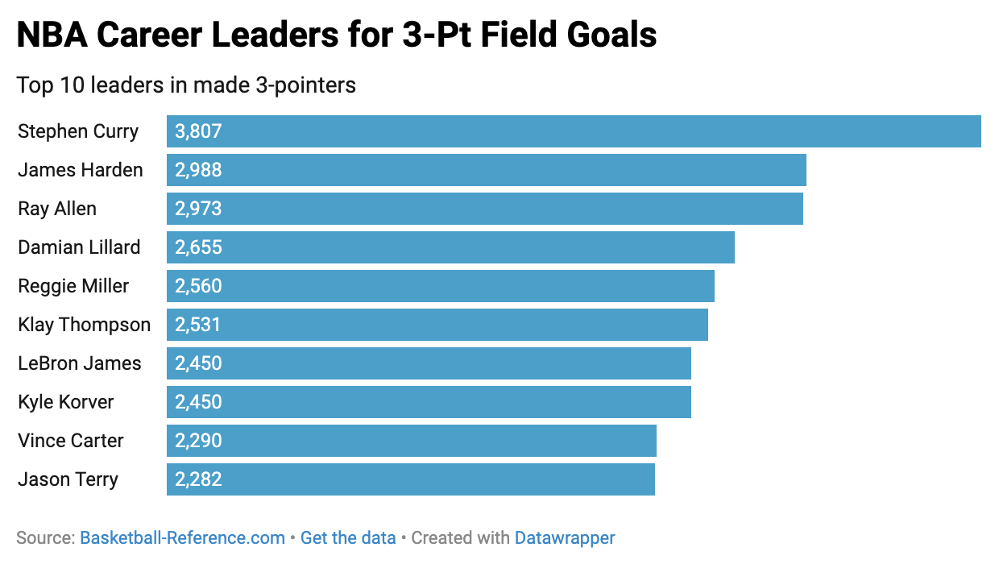
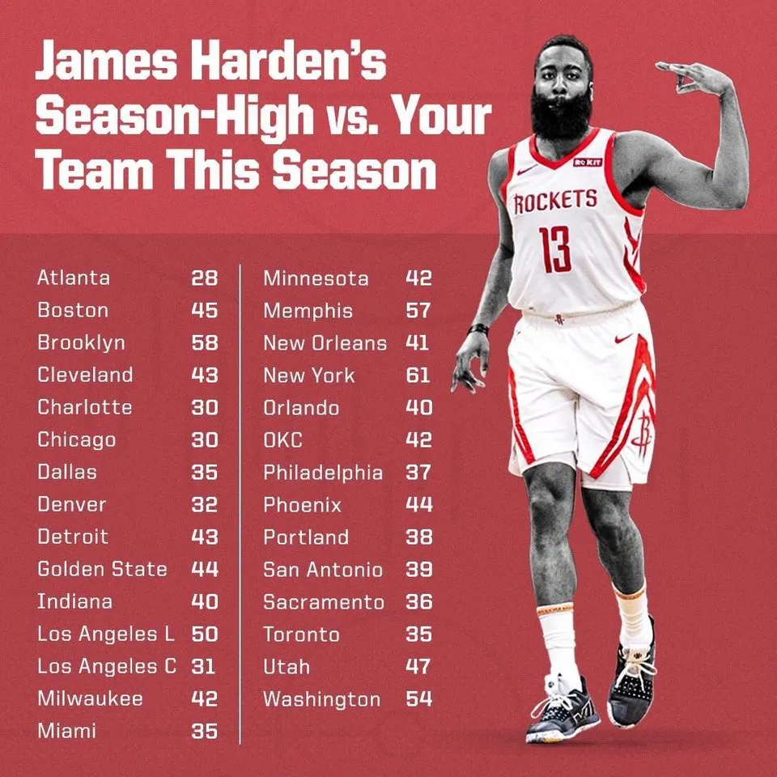
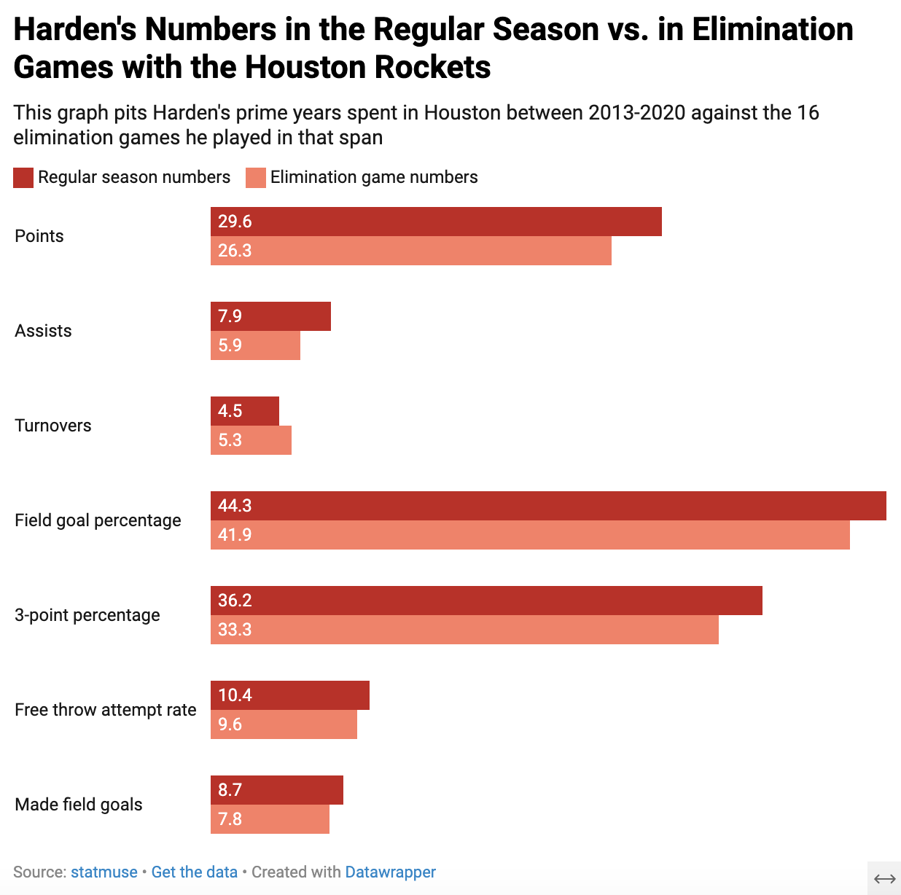

Across 15 years in the NBA, James Harden has achieved a level of fame few players have ever approached. His ongoing prominence is colored by his exploits on the court, off the court and under the media-driven microscope that comes with basketball stardom, immortalizing a player with nearly enough memorable peaks to make us forget about the legacy of his career.
He became known in the 2010s to even casual fans for his ever-growing beard and his lavish spending at Houston clubs. But he'll be also remembered for his MVP-winning scoring package, dominating the league with a stepback three-point shot that permanently bent how defenses guard the perimeter of the court.
Harden is a guaranteed first-ballot Hall of Famer, joining the likes of fellow modern-day bucket getters like Kevin Durant and Stephen Curry. He, like his former teammate KD and career rival Curry, is still producing, now with the Los Angeles Clippers. He just recently passed Ray Allen for the second-most three-pointers in NBA history, trailing only Curry (whom he'll never catch).
His personal accolades and numbers stack up well against all-timers like KD and Curry, but with one glaring omission: He's never earned a championship ring. If there's one critique Harden's yet to escape, it's his reputation as someone who couldn't get it done in big games.
An individual player has more impact in basketball than in the other two dominant American sports, football or baseball. Harden led his Houston Rockets to excellence in his prime by believing that he, the team's premier shooter and passer, should control the ball more than anyone.
This worked in the regular season; the guard led the league in scoring from 2018-20 while averaging 33.7 points and controlling the ball 37.7% of the time he was on the court. He led the NBA in the latter category, usage rate, for two of those three years. No one could stop him, as per this 2019 table.
Source: https://rocketswire.usatoday.com/2019/03/19/if-james-harden-gets-30-tonight-hes-scored-30-points-against-every-team-in-the-nba-this-year/
That approach routinely lost its luster in the playoffs. Harden's career scoring average slipped only slightly, falling from 24.1 points in the regular season to 22.7 in 166 playoff games (Basketball-Reference.com).
“The Beard” has made the playoffs 15 years in a row, but his postseason scoring has only met or surpassed his regular season scoring three times. The same goes for his field goal percentage, just the opposite of what marks a playoff riser.
Though he occasionally caught fire, opponents knew they could ignore Harden's teammates and focus all their attention on him come crunch time, when his passing ceased in exchange for high-risk self-creation.
Harden's gaudy numbers couldn't translate from a typical shooting display on a November night in Charlotte to a hostile playoff venue like Golden State's Oracle Arena, but that alone doesn't mean he's a failure as a championship-caliber first option. In elimination games, the ones in which he determined whether he would extend his season or go home, he dipped further, resulting in several all-time sad exits.
He's only won eight times in 24 total elimination games. Just by the numbers, he has more elimination games shooting 33.3% or below from the field (10) than he does shooting above 50% (seven), as per StatMuse, a mark most would consider separates efficiency from inefficiency. That includes multiple two-for-11 finishes from the floor, where his worst habits were on full display.
Harden has made a lot of money initiating contact and baiting defenders into infractions, then relying on referees to bail him out, despite those calls regularly disappearing come playoffs.
If there's one loss Harden will be remembered for, it'll be the best chance he had to take down the Golden State Warriors in 2018 after multiple eliminations at their hands. In a win-or-go-home Game 7, he and his Rockets rattled off 27 straight missed threes, blowing the lead and the series. He led the squad with 10 long-range bricks over that span, an example of failure to adapt to circumstances.
He's had some tough luck with matchups, running into the Warriors four out of the five times they steamrolled their way to the NBA Finals between 2015-19 and losing Chris Paul to injury in the middle of that 2018 showdown, but he also failed to capitalize in subsequent situations in Brooklyn, Philadelphia and now LA.
Harden's championship ring finger remains naked, and between his underperforming in big games and flaming out in the biggest games, that absence is no fluke.